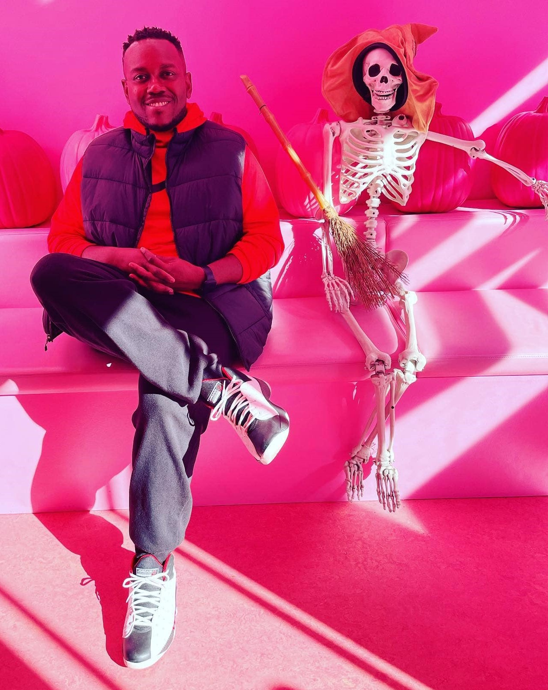

Chris Moore's Resume
A Beginner's Level Web Developer with a Big Heart

Objective
I am a highly motivated and resourceful individual that is currently seeking a new role that will permit me to utilize my work experience and educational background. Strong ability to manage multiple simultaneous projects with clients, customers, and colleagues. Exceptional organizational communicator with interpersonal and time management skills. A hard-working employee who always sustains an exceptionally positive disposition while maintaining an easily coachable and teachable attitude. Possesses the desire for basic concepts, and practices effective team building skills.
Education
BELHAVEN UNIVERSITY - Located in Jackson, Mississippi, graduated December 2019, and obtained a Graduate Certification in Human Resources Management with a G.P.A of 3.6
DELTA STATE UNIVERSITY - Located in Cleveland, Mississippi, graduated December 2011, and obtained a Bachelor of Fine Arts degree in Graphic Design with a G.P.A of 3.2
Work Experience
Research Technician - Charles River Laboatories from October 2021 to current
Duties include, but are not limited to the following:
- Administering substances to animals, performing husbandry duties, including cleaning/transporting caging, and providing food and water.
- Performing daily clinical observations of animals to determine morbidity/mortality.
- Collecting and handling data and specimens; assisting veterinarians, management, and other company personnel with animal care, study-related tasks, and process improvement initiatives.
- Efficiently perform and document all procedures in compliance with regulatory standards.
- Effectively leading a team to perform subject and study level functions.
- Assisting supervisors and project leaders with daily scheduling and task assignments.
Quality Assurance Specialist - Western Diversified Plastics from March 2019 to July 2021
- Inspected and tested automobile parts within the established parameters and ensured correct functionality.
- Notified Production Supervisor if any changes were needed if parts were deemed defective.
- Shipped parts to clients with assistance of warehouse staff.
Teacher - Sunflower County Consolidated School District from July 2016 to August 2017
- Planned, organized, and implemented a suitable instructional program via a lesson plan in an elementary or secondary learning environment for students.
- Provided guidance to 4th and 5th grade students.
- Encouraged students to develop and fulfill their academic potential.
Skills and Abilities
- Dedicated to providing quality customer service experience for 6+years.
- Responsible, flexible, and maintains a positive attitude.
- Goal-oriented, driven, and possess the ability to effectively multi-task.
- Possesses the ability to manage priorities and adapts quickly to change.
- Exceptional experience in Microsoft Office Suite.
Awards and Certifications
- Registered Animal Laboratory Technician - American Association of Laboratory Animal Science. Expires May 30, 2025.
Links
My Hobbies
Contact Me
LinkedIn